실내건축기사(구) (2018-04-28 기출문제)
1과목: 실내디자인론
1. 다음과 같은 특징을 갖는 사무소 건축의 코어 유형은?
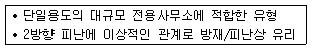
- 양단코어
- 독립코어
- 편심코어
- 중심코어
(정답률: 89%)

2. 버내큘러 디자인에 관한 설명으로 옳지 않은 것은?
- 디자인 과정이 다소 불투명하고 익명성을 갖는다.
- 디자인의 기능성보다는 미적 측면을 강조한 디자인이다.
- 문화적인 사물에 나타난 그 지역의 민속적 특성을 일컫는 표현이다.
- 전통적인 도구(도끼, 망치 등, 철물류(경첩, 자물쇠등), 가사도구 등도r해당한다.
(정답률: 81%)
3. 거실의 가구배치 형식 중 소파를 서로 직각이 되도록 연결해서 배치하는 형식으로, 시선이 마주치지 않아 안정감이 있는 것은?
- 대면형
- 코너형
- U자형
- 복합형
(정답률: 90%)
4. 상점의 실내계획에 관한 설명으로 옳지 않은 것은?
- 고객의 동선은 가능한 길게 배치하는 것이 좋다.
- 바닥, 벽 , 천장은 상품에 대해 배경 역할을 할 수있도록 한다.
- 실내의 바닥면은 큰 요철을 두어 공간의 변화를 연출하는 것이 좋다.
- 전체 색의 배분에서 분위기를 지배하는 주조색은 약 60% 정도로 적용하는 것이 좋다.
(정답률: 83%)
5. 조명의 연출기법에 속하지 않는 것은?
- 스파클(sparkle) 기법
- 글레이징(glazing) 기법
- 월워싱(wall washing) 기법
- 패키지 유닛(package unit) 기법
(정답률: 87%)
6. 실내디자인의 계획조건을 외부적 조건과 내부적 조건으로 구분할 경우, 다음 중 외부적 조건에 속하지 않는 것은?
- 입지적 조건
- 경제적 조건
- 건축적 조건
- 설비적 조건
(정답률: 82%)
7. 실내장식물에 관한 설명으로 옳지 않은 것은?
- 공간을 강조하고 흥미를 높여 주는 효과가 있다.
- 주변 물건들과의 조화 등을 고려하여 선택한다.
- 개성을 표현하는 자기 표현의 수단이 될 수 있다.
- 기능은 없고 미적 효용성을 더해 주는 물품을 말한다.
(정답률: 90%)
8. 질감에 관한 설명으로 옳은 것은?
- 재료표면이 빛을 흡수하는 정도는 질감에 영향을 미치지 않는다.
- 시각으로 인식되는 질감과 촉각으로 인식되는 질감에는 차이가 없다.
- 효과적인 질감 표현을 위해서는 색채와 조명을 동시에 고려해야 한다.
- 질감은 재료의 표면상태에 대한 느낌으로 흡음성과는 상관관계가 없다.
(정답률: 86%)
9. 균형의 원리에 관한 설명으로 옳지 않은 것은?
- 크기가 큰 것이 작은 것보다 시각적 중량감이 크다.
- 색의 중량감은 색의 속성 중 명도, 채도에 영향을 받는다.
- 불규칙적인 형태가 기하학적 형태보다 시각적 중량감이 크다.
- 단순하고 부드러운 질감이 복잡하고 거친 질감보다 시각적 중량감이 크다.
(정답률: 84%)
10. 유닛 가구(unit fumiture)에 관한 설명으로 옳지 않은 것은?
- 고정적이면서 이동적인 성격을 갖는다.
- 특정한 사용목적이나 많은 물품을 수납하기 위해 건축화된 가구이다.
- 공간의 조건에 맞도록 조합시킬 수 있으므로 공간의 이용효율을 높여 준다.
- 규격화된 단일가구를 원하는 형태로 조합하여 사용할 수 있으므로 다목적 사용이 가능하다.
(정답률: 70%)
11. 실내공간을 구성하는 기본요소 중 천장에 관한 설명으로 옳은 것은?
- 천장의 형태는 실내공간의 음향에 영향을 주지 않는다.
- 내부공간의 어느 요소보다도 조형적으로 제약을 많이 받는다.
- 천장의 일부를 높이거나 낮추는 것을 통해 공간의 영역을 한정할 수 있다.
- 천장은 시각적 흐름이 시작되는 곳이기에 지각의 느낌에 영향을 주지 않는다.
(정답률: 82%)
12. 미술관 전시실의 순회유형에 관한 설명으로 옳은 것은?
- 연속 순회형식은 각 전시실을 독립적으로 폐쇄할 수 있다.
- 연속 순회형식은 각각의 전시실에 -바로 들어갈 수 있다는 장점이 있다.
- 중앙홀 형식에서 중앙홀이 크면 동선의 혼란은 없으나 장래의 확장에는 무리가 있다.
- 갤러리 및 코리도 형식은 하나의 전시실을 폐쇄 시키면 전체 동선의 흐름이 막히게 되므로 비교적 소규모 전시실에 적합하다.
(정답률: 71%)
13. 디자인 원리 중 대비에 관한 설명으로 옳지 않은 것은?
- 극적인 분위기를 연출하는데 효과적이다
- 강력하고 화려하며 남성적인 이미지를 준다.
- 모든 시각적 요소에 대하여 상반된 성격의 결합에서 이루어진다.
- 상반 요소가 밀접하게 접근하면 할수록 대비의 효과는 감소한다.
(정답률: 77%)
14. 형태의 지각 심리 중 형과 배경의 법칙에 관한 설명으로 옳지 않은 것은?
- 형은 가깝게 느껴지고 배경은 멀게 느껴진다.
- 명도가 낮은 것보다는 높은 것이 배경으로 인식되기 쉽다.
- 대체적으로 면적이 작은 부분이 형이 되고, 큰 부분은 배경이 된다.
- 형과 배경이 순간적으로 번갈아 보이면서 다른 형태로 지각되는 심리의 대표적인 예로 ‘루빈의 항아리’를 들 수 있다.
(정답률: 80%)
15. 주택의 동선계획에 관한 설명으로 옳지 않은 것은?
- 가사노동의 동선은 가능한 남측에 위치시키도록 한다.
- 사용빈도가 높은 공간은 동선을 길게 처리하는 것이 좋다.
- 동선이 교차하는 곳은 공간적 두께를 크게 하는 것이 좋다.
- 개인, 사회, 가사노동권 등의 동선은 상호간 분리하는 것이 좋다.
(정답률: 87%)
16. 뮐러-리어 도형과 관련된 착시의 종류는?
- 방향의 착시
- 길이의 착시
- 다의도형 착시
- 위치에 의한 착시
(정답률: 64%)
17. 사무소 건축에서 개방식 배치의 한 형식으로 업무와 환경을 경영관리 및 환경적 측면에서 개선하여 배치를 의사전달과 작업 흐름의 실제적 패턴에 기초를 두는 것은?
- 아트리움(atrium)
- 싱글 오피스(single office)
- 스마트 시스템 (smart system)
- 오피스 랜드스케이프(office landscape)
(정답률: 90%)
18. 부엌에서의 작업순서에 따른 작업대의 효율적인 배치순서로 가장 알맞은 것은?
- 준비대 - 조리대 - 개수대 - 가열대 - 배선대
- 준비대 - 개수대 - 조리대 - 가열대 - 배선대
- 준비대 - 배선대 - 개수대 - 조리대 - 가열대
- 준비대 - 조리대 - 개수대 - 배선대 - 가열대
(정답률: 81%)
19. 다음 설명에 알맞은 벽의 높이에 따른 공간 구획 방법은?
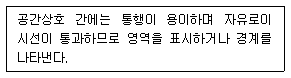
- 시각적 개방
- 상징적 경계
- 시각적 차단
- 칸막이 벽체
(정답률: 71%)
20. 상점의 디스플레이 기법으로서 VMD(Visual merchandising)의 구성 요소에 속하지 않는 것은?
- IP(Item Presentation)
- VP(Visual Presentation)
- SP(Special Presentation)
- PP(Point of sale Presentation)
(정답률: 81%)
2과목: 색채학
21. 디지털 이미지의 특징 중 해상도(resolution)에 대한 설명으로 잘못된 것은?
- 동일한 해상도에서 큰 모니터가 더 선명하고, 작은 모니터일수록 선명도가 떨어진다.
- 하나의 이미지 안에 몇 개의 픽셀을 포함하는가에 대한 척도 단위로는 dpi를 사용한다.
- 해상도는 픽셀들의 집합으로 한 시스템 내에서 픽셀의 개수는 정해져 있다.
- 해상도는 디스플레이 모니터 안에 있는 픽셀의 숫자로 가로방향과 세로방향의 픽셀의 개수를 곱하면 된다.
(정답률: 83%)
22. 다음 중 색의 시인성을 높이기 위한 가장 좋은 방법은?
- 난색보다는 한색을 선택한다.
- 배경색과 명도차를 동일하게 한다.
- 흰색바탕의 빨강색을 흰색바탕의 보라색으로 바꾼다.
- 바탕색에 비하여 명도와 채도 차이를 크게 한다.
(정답률: 84%)
23. 다음 중 감산혼합에 대한 설명 중 틀린 것은?
- 원색인 시안과 마젠타를 섞으면 2차색은 파랑색이 된다.
- 그 예로 인쇄 출력물 퉁이 있다.
- 2차색들은 색광혼합의 3원색과 동일하다.
- 2차색들은 명도는 낮아지고 채도가 높아진다.
(정답률: 65%)
24. 어떤 색이 같은 색상의 선명한 색 위에 위치하면 원래의 색보다 훨씬 탁한 색으로 보이고 무채색 위에 위치하면 원래의 색보다 맑은 색으로 보이는 대비현상은?
- 명도대비
- 채도대비
- 색상대비
- 연변대비
(정답률: 74%)
25. 저드(D. B. Judd)의 색채조화론과 관련이 없는 것은?
- 질서의 원리
- 모호성의 원리
- 유사성의 원리
- 친근감의 원리
(정답률: 73%)
26. 다음 색채배색 중 단맛의 느낌을 수반하는 배색은?
- 빨강, 핑크
- 브라운, 올리브
- 파랑, 갈색
- 초록, 회색
(정답률: 79%)
27. 먼셀 색체계에 관한 설명 중 틀린 것은?
- 모든 색상의 채도 위치가 같아 배색이 용이하다.
- 색상, 명도, 채도의 3속성을 기호로 한 3차원 체계이다.
- 먼셀 색상은 R, Y, G, B, P를 기본색으로 한다.
- 한국산업표준으로 제정되고 교육용으로 제정된 색체계이다.
(정답률: 69%)
28. 낮에 빨간 물체가 날이 저물어 어두워지면 어둡게 보이고, 또 낮에 파랗게 보이는 물체는 밝게 보이는 것은 무엇 때문인가?
- 연색성
- 메타메리즘
- 푸르킨예 현상
- 색각항상
(정답률: 71%)
29. 다음이 설명하는 색채조화론은?
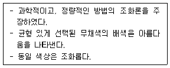
- 오스트발트
- 비렌
- 문·스펜서
- 먼셀
(정답률: 67%)
30. 같은 색의 물체를 동 일한 광원에서 보더라도 면의 크기가 변하면 색이 다르게 보 일 수 있는 것은?
- 면적 효과
- 색상 대비
- 연변 대비
- 메타메리즘
(정답률: 78%)
31. 수송 기관의 대표적인 시내버스, 지하철, 기차 등의 색채설계 방법으로 적합하지 않는 것은?
- 도장 공정 이 간단할수록 좋다.
- 조색이 용이할수록 좋다.
- 변색, 퇴색하지 않는 도료가 좋다.
- 특수한 도료로 어렵게 구입되는 색료가 좋다.
(정답률: 89%)
32. 색채조화에 관한 설명 중 틀린 것은?
- 동일·유사조화는 강렬한 느낌을 준다.
- 보색배색은 색상대비가 크다.
- 대비조화는 동적인 느낌을 준다.
- 배색된 색채들의 상태와 속성이 서로 반대되면서도 모호한 점이 없을 때 조화된다.
(정답률: 80%)
33. 다음 중 Lab 색 모델 설명으로 틀린 것은?
- 균일 색 모델(uniform color model)이다.
- L은 밝기, a와 b는 색도 성분에 해당한다.
- 균일 색 모델에는 Lab, Luv 등의 모델이 존재한다.
- green에서 magenta 사이의 색 단계는 b축이다.
(정답률: 61%)
34. 바나나의 색이 노랗게 보이는 이유는?
- 다른 색은 흡수하고, 노란 색광만 반사하기 때문
- 다른 색은 반사하고, 노란 색광만 흡수하기 때문
- 다른 색은 굴절하고, 노란 색광만 투과하기 때문
- 다른 색은 반사하고, 노란 색광만 투과하기 때문
(정답률: 84%)
35. 먼셀 기호로 표시할 때 5R 4/10 이라고 표기한 색에 대한 설명이 틀린 것은?
- 색상은 5R이다.
- 명도는 4이다.
- 채도는 4/10이 다.
- 5R 4의 10이 라 고 읽는다.
(정답률: 87%)
36. 오스트발트 색체계의 색상에 대한 설명이 틀린 것은?
- 24색상환으로 1~24로 표기한다.
- 색상은 혜링의 4원색을 기본으로 한다.
- Red의 보색은 Sea Green 이다.
- Red는 1R~3R로, 색상번호는 1~3에 해당된다.
(정답률: 61%)
37. 채도에 따른 색의 구분을 할 때 명도는 높고 채도가 낮은 색은?
- 청색
- 명청색
- 암청색
- 탁색
(정답률: 70%)
38. 색과 색의 상징이 잘못 연결된 것은?
- 빨강 - 정열, 사랑
- 노랑 - 신앙, 소박
- 파랑 - 젊음, 성실
- 초록 - 희망, 휴식
(정답률: 81%)
39. 관용색명 ‘베이비핑크’와 관련이 없는 것은?
- 흐린 분홍
- 5R 8/4
- 7Y.8.5/4
- baby pink
(정답률: 84%)
40. 가시광선은 파장 380~780nm의 전자파를 말하는데 380nm이하의 파장을 갖고 있으면서 화학작용 및 살균작용을 하는 전자파는?
- 적외선
- 자외선
- 휘선
- 흑선
(정답률: 69%)
3과목: 인간공학
41. 고압환경이 인체에 미치는 영향과 가장 거리가 먼 것은?
- 폐수종이 발생한다.
- 질소마취현상이 일어난다.
- 울혈, 부종, 출혈 등이 발생한다.
- 압치통 또는 부비강통을 호소한다.
(정답률: 61%)
42. 광원으로부터의 직사휘광 처리방법으로 틀린 것은?
- 광원을 시선에서 멀리 위치시킨다.
- 광원의 휘도를 줄이고 수를 증가시킨다.
- 휘광원 주위를 어둡게 하여 광속발산비(휘도)를 늘린다.
- 가리개(shield) 와 갓(hood) 혹은 차양(visor)을 사용한다.
(정답률: 76%)
43. 제품디자인에 있어 인간공학적인 고려대상으로 볼수 없는 것은?
- 인간의 성능 향상
- 사용 편리성의 향상
- 개인차를 고려한 디자인
- 하드웨어의 신뢰성 향상
(정답률: 66%)
44. 신체 부위의 동작 중 그림의 “A” 방향에 해당하는 것은?
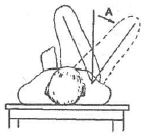
- 굴곡(flexion)
- 하향(pronation)
- 외전(abduction)
- 내전(adduction)
(정답률: 84%)
45. 바닥의 물건을 선반 위로 올려놓는 자세와 같이 팔을 펴서 위아래로 움직였을 때 그려지는 범위를 무엇이라 하는가?
- 필요 공간
- 수평면 작업역
- 입체 작업역
- 수직면 작업역
(정답률: 79%)
46. 음의 가청주파수 범위에서 최저 주파수(Hz)로 맞는 것은?
- 0
- 5
- 20
- 40
(정답률: 63%)
47. 인간의 눈에 관한 설명으로 맞는 것은?
- 암순응이 명순응보다 빠르다.
- 원추세포는 색을 구별할 수 있다.
- 수정체가 두꺼워지면 원시안이 된다.
- 빛을 감지하는 간상세포는 수정체에 존재한다.
(정답률: 72%)
48. 정신적 피로도를 평가하기 위한 측정방법과 가장 거리가 먼 것은?
- 대뇌피질활동 측정
- 호흡순환기능 측정
- 근전도(EMG) 측정
- 점멸융합주파수(Flicker)치 측정
(정답률: 68%)
49. 실내표면의 추천 반사율이 낮은 것에서 높은 순서로 맞는 것은?
- 바닥＜천정＜가구＜벽
- 가구＜바닥＜벽＜천정
- 천정＜벽＜바닥＜가구
- 바닥＜가구＜벽＜천정
(정답률: 77%)
50. 신장(키)과 상관관계가 가장 낮은 인체측정치는?
- 체중
- 앉은 키
- 오금 높이
- 팔 길이
(정답률: 68%)
51. 소음에 의한 난청을 방지하기 위한 방법이 아닌 것은?
- 소음원을 격리시킨다.
- 주변에 차폐시설을 한다.
- 주변의 배치를 재조정한다.
- 소음원의 진동수를 4000Hz 전후로 조정한다.
(정답률: 75%)
52. 밝은 곳에서 어두운 곳으로 이동할 때의 빛에 대한 감도변화를 무엇이라 하는가?
- 암순응
- 가현운동
- 자동운동
- 자극운동
(정답률: 86%)
53. 모니터에서 나타내는 텍스트에 대한 가독성을 높이 기 위한 방안으로 적절하지 않은 것은?
- 텍스트와 바탕 사이의 명도대비를 최대화한다.
- 한 눈에 들어올 수 있도록 색상을 될 수 있으면 화려하게 한다.
- 불필요한 정보를 피하며, 단어 배열을 간략하게 하여 표의 형식을 취한다.
- 어두운 바탕에 진한 적색과 청색, 또는 청색과 녹색 등의 텍스트를 사용하지 않도록 한다.
(정답률: 84%)
54. 학습(learning)과 관련하여 틀린 것은?
- 학습 기간들 사이에 어느 정도 간격을 두는 것이 바람직하다.
- 일반적으로 부정적 유인(negative incentive)보다 긍정 적 유인(positive incentive)이 효과적이다.
- 학습의 단계로 보아 개념에 대한 학습이 먼저 이루어져야 만이 다수에 대한 변별능력이 학습된다.
- 업무와 관련된 내재적 유인(intrinsic incentive)이외적 유인(external incentive보다 효과적이다.
(정답률: 53%)
55. 인간공학에 있어 자극들 사이, 반응들 사이, 혹은 자극 - 반응 조합의 공간, 운동 혹은 개념적 관계가 인간의 기대와 모순되지 않도록 하는 것을 무엇이라 하는가?
- 순응(adaptation)
- 양립성(compatibility)
- 접근 용이성(accessibility)
- 조절 가능성(adjustability)
(정답률: 76%)
56. 정량적인 눈금이 정성적으로 사용될 수 있으며, 원하는 값으로부터의 대략적인 편차나 고도를 읽을 때 그 변화 방향과 변화율 등을 알아볼 수 있는 표시장치는?
- 계수형(digital)
- 동목형(moving scale)
- 동침형(moving pointer)
- 묘사적 표시장치(representational display)
(정답률: 68%)
57. 청각 표시장치가 시각적 표시장치보다 사용하기 좋은 경우에 해당하는 것은?
- 메시지가 복잡한 경우
- 한 곳에 머무르는 경우
- 나중에 참고가 필요한 경우
- 즉각적 행동이 요구되는 경우
(정답률: 83%)
58. 진동의 영향을 가장 많이 받는 것은?
- 시력
- 반응시간
- 감시(monitoring)작업
- 형태식별(pattern recognition)
(정답률: 63%)
59. 조종 - 반응 비율(C/R 비)에 대한 설명으로 틀린 것은?
- C/R비가 클수록 조종장치는 민감하다.
- C/R비가 작으면 조정시간은 오래 걸린다.
- 표시장치의 반응거리에 대한 조종장치를 이동한 거리의 비율이다.
- 최적 C/R 비는 조정시간과 이동시간의 합이 최소가 되는 점을 가리킨다.
(정답률: 50%)
60. 사람의 근육은 운동(훈련)을 하면 근육이 발달하고 힘이 증가하는데 그 이유는?
- 지방질의 축적이 이루어지기 때문
- 근육의 섬유(fiber) 숫자가 증가하기 때문
- 근육의 섬유 숫자도 늘고 각각의 섬유도 발달하기 때문
- 근육의 섬유 숫자는 일정하나 각각의 섬유가 발달하기 때문
(정답률: 60%)
4과목: 건축재료
61. 단열재료가 구비해야 할 조건이 아닌 것은?
- 열전도율이 낮을 것
- 흡수율이 낮을 것
- 비중이 클 것
- 내화성이 좋을 것
(정답률: 72%)
62. 목재 제품에 관한 설명으로 옳지 않은 것은?
- 내수합판 제조 시 페놀수지 접착제가 쓰인다.
- 합판을 만들 때 단판(veneer)을 홀수로 겹쳐 접착한다.
- 집성목재는 보에 사용할 경우 응력크기에 따라 변단면재를 만들 수 있다.
- 집성목재 제조 시 목재를 겹칠 때 섬유방향이 상호 직각이 되도록 한다.
(정답률: 65%)
63. 강화유리에 관한 설명으로 옳지 않은 것은?
- 보통 판유리를 2장 이상으로 접합한 것이다.
- 강화열처리 후에 절단·구멍뚫기 등의 재가공이 극히 곤란하다.
- 보통유리에 비해 3~5 배 정도 강하다.
- 충격을 받아 파손되면 유리조각이 잘게 부서진다.
(정답률: 66%)
64. 석재의 내구성에 관한 설명으로 옳지 않은 것은?
- 조암광물이 미립자일수록 내구성이 크다.
- 흡수율이 큰 다공질일수록 동해를 받기 쉽다.
- 조암광물 중에 황화물, 철분함유광물, 탄산마그네시아, 탄산칼슘 등은 풍화되기 어렵다.
- 석재의 내구성은 조직, 조암광물의 종류 등에 따라 달라진다.
(정답률: 64%)
65. 질이 단단하고 내구성 및 강도가 크며 외관이 수려 하나 함유광물의 열팽창계수가 달라 내화성이 약한 석재로 외장, 내장, 구조재, 도로포장재, 콘크리트 골재등에 사용되는 것은?
- 응회암
- 화강암
- 화산암
- 대리석
(정답률: 70%)
66. 파티클 보드의 특징이 아닌 것은?
- 경량이다.
- 못질, 구멍뚫기 등 가공이 용이하다.
- 음, 열의 차단성이 우수하다.
- 방향성에 따른 강도의 차이가 크다.
(정답률: 77%)
67. 다음 중 흡수율이 가장 높은 석재는?
- 대리석
- 점판암
- 화강암
- 응회암
(정답률: 55%)
68. 다음 중 수경성 미장재료는?
- 회반죽
- 돌로마이트 플라스터
- 회사벽
- 석고 플라스터
(정답률: 69%)
69. 단백질계 접착제인 카세인 아교의 주성분은?
- 녹말
- 난백
- 우유
- 동물의 가죽이나 뼈
(정답률: 57%)
70. 도료의 원료 중 테레빈유를 사용하는 주목적은?
- 착색 용이
- 내구성 증대
- 시공성 증대
- 건조 향상
(정답률: 47%)
71. 실리카질 물질을 주성분으로 하며, 시멘트의 수화에 의해 생기는 수산화칼슘과 상온에서 서서히 반응하여 불용성의 화합물을 만드는 재료는?
- 포졸란
- 실리카흄
- 고로슬래그
- 플라이애시
(정답률: 44%)
72. 연성(軟性)시멘트 모르타르 미장에 관한 설명으로 옳지 않은 것은?
- 미장 바름을 쉽게 하기 위해 혼화제를 첨가하여 비빈다.
- 경화 후에는 못질이 쉽다.
- 벽의 졸대붙임 바탕에 쓰인다.
- 지붕잇기 바탕 등에 쓰인다.
(정답률: 36%)
73. 다음 중 내식성이 가장 높은 재료는?
- 티타늄
- 아연
- 스테인리스강
- 동
(정답률: 55%)
74. 유성에나멜페인트에 관한 설명으로 옳지 않은 것은?
- 유성바니시에 안료를 첨가한 것을 말한다.
- 내알칼리성이 우수하여 콘크리트면에 주로 사용된다.
- 유성페인트와 비교하여 건조시간, 도막의 평활정도가 우수하다.
- 유성페인트와 비교하여 광택, 경도가 우수하다.
(정답률: 57%)
75. 표면에 청록색을 띠고 있으며, 건축장식철물 또는 미술공예품으로 이용되는 금속은?
- 니켈
- 청동
- 황동
- 주석
(정답률: 86%)
76. 목재의 용적변화 팽창 및 수축에 관한 설명으로 옳지 않은 것은?
- 변재는 심재보다 용적변화가 일반적으로 크다.
- 비중이 클수록 용적변화가 적다.
- 널결폭이 곧은결 폭보다 크다.
- 함수율이 섬유포화점보다 크게 되면 함수율이 증가 하여도 용적변화는 거의 없다.
(정답률: 50%)
77. 테라코타에 관한 설명으로 옳지 않은 것은?
- 장식용 점토제품으로 미술적 효과가 크다.
- 천연 석재보다 가볍다.
- 화강암보다 내화성이 작다.
- 주조법이나 압출성형을 통해 제작한다.
(정답률: 59%)
78. 점토제품 중 흡수율이 가장 작은 것은?
- 자기
- 도기
- 석기
- 토기
(정답률: 82%)
79. 멤브레인(membrane)방수층에 포함되지 않는 것은?
- 아스팔트 방수층
- 스테인리스 시트 방수층
- 합성고분자계 시트 방수층
- 도막방수층
(정답률: 43%)
80. 습윤상태의 모래 780g을 건조로에서 건조시켜 절대 건조상태 720g으로 되었다. 이 모래의 표면수율은? (단, 이 모래의 흡수율은 5%이다.)
- 3.08%
- 3.17%
- 3.33%
- 3.5%
(정답률: 47%)
5과목: 건축일반
81. 철근콘크리트 구조에서 철근과 콘크리트의 합성효과가 성립되는 이유로 옳지 않은 것은?
- 철근과 콘크리트의 온도에 의한 선팽창계수의 차가 적다.
- 콘크리트에 매립되어 있는 철근은 잘 녹슬지 않는다.
- 철근과 콘크리트의 부착강도가 비교적 크다.
- 콘크리트의 인장강도가 커질수록 철근의 좌굴이 방지된다.
(정답률: 55%)
82. 화재가 발생할 경우 피난을 위해 사용되는 피난설비에 해당되는 것은?
- 비상조명등
- 비상콘센트설비
- 비상방송설비
- 자동화재속보설비
(정답률: 72%)
83. 15세기 초 르네상스 건축의 발생지로 옳은 것은?
- 이탈리아
- 프랑스
- 독일
- 영국
(정답률: 70%)
84. 지진이 발생할 경우 소방시설이 정상적으로 작동될 수 있도록 소방청장이 정하는 내진설계기준에 맞게 설치하여야 하는 소방시설이 아닌 것은? (단, 내진설계기준의 설정 대상 시설에 소방시설을 설치하는 경우)
- 옥내소화전설비
- 스프링클러설비
- 물분무등소화설비
- 무선통신보조설비
(정답률: 61%)
85. 건축물의 피난시설과 관련하여 건축물로부터 바깥쪽으로 나가는 출구를 설치하여야 하는 대상 건축물이 아닌 것은?
- 장례시셜
- 위락시설
- 문화 및 집회시설 중 전시장
- 승강기를 설치하여야 하는 건축물
(정답률: 69%)
86. 상업지역 및 주거지역에서 건축물에 설치하는 냉방시설 및 환기시설의 배기구는 도로면으로부터 몇 m 이상의 높이에 설치해야 하는가?
- 1.8m 이상
- 2m 이상
- 3m 이상
- 4.5m 이상
(정답률: 66%)
87. 6층 이상의 거실면적의 합계가 12000m2인 교육연구시설에 설치하여야 할 승용승강기의 최소 설치 대수는? (단, 8인승 이상 15인승 이하의 승강기 기준)
- 2대
- 3대
- 4대
- 5대
(정답률: 52%)
88. 소방시설법령에 따라 단독주택에 설치하여야 하는 소방시설을 옳게 나타낸 것은?
- 소화기 및 간이스프링클러
- 소화기 및 단독경보형감지기
- 소화기 및 자동화재탐지설비
- 소화기 및 간이완강기
(정답률: 54%)
89. 조립식 철근콘크리트구조(PC)의 특성에 관한 설명으로 옳지 않은 것은?
- 공장 생산이 가능하여 대량 생산을 할 수 있다.
- 기계화 시공으로 단기 완성이 가능하다.
- 각 부품의 정밀도가 높고 강도가 큰 부재를 사용 할 수 있다.
- 각 부품과의 접합부가 일체화되어 일반 라멘구조에 비하여 접합부의 강성이 매우 크다.
(정답률: 72%)
90. 다음은 소방시설법령상 옥내 소화전설비를 설치해야 할 특정소방대상물의 기준이다. ( ) 안에 들어갈 내용으로 옳은 것은?
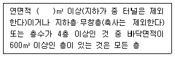
- 500
- 1000
- 1500
- 3000
(정답률: 44%)
91. 배연설비설치와 관련하여 배연창의 유효면적은 1m2이상으로서 그 면적의 합계가 건축물 바닥면적의 최소 얼마 이상으로 하여야 하는가?
- 1/10 이상
- 1/20 이상
- 1/100 이상
- 1/200 이상
(정답률: 54%)
92. 종교시설인 건축물의 주계단·피난계단 또는 특별피난 계단에서 난간이 없는 경우에 손잡이를 설치하고자 할때 손잡이는 벽 등으로부터 최소 얼마 이상 떨어져 설치해야 하는가?
- 3cm
- 5cm
- 8cm
- 10cm
(정답률: 67%)
93. 다음 H형강의 표기법으로 옳은 것은?
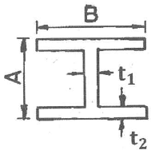
- H-A × B × t1 × t2
- H-A × B × t2 × t1
- H-B × A × t1 × t2
- H-B × A × t2 × t1
(정답률: 55%)
94. 다음 그림 중 제혀쪽매에 해당하는 것은?
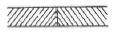
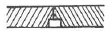
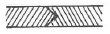
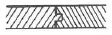
(정답률: 81%)
95. 건축물의 피난·방화구조 등의 기준에 관한 규칙에 따른 내화구조로 볼 수 없는 것은? (단, 벽의 경우)
- 철골철근콘크리트조로서 두께가 15cm인 것
- 철근콘크리트조로서 두께가 15 cm인 것
- 벽돌조로서 두께가 15cm인 것
- 고온·고압의 증기로 양생된 경량기포 콘크리트패널 또는 경량기포 콘크리트블록조로서 두께가 10cm인 것
(정답률: 73%)
96. 다음은 건축물의 지하층과 피난층 사이의 개방공간 설치에 관한 법령 사항이다. ( ) 안에 알맞은 것은?
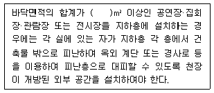
- 1500
- 2000
- 3000
- 4000
(정답률: 62%)
97. 고딕건축양식에 관한 설명으로 옳지 않은 것은?
- 플라잉 버트레스를 사용함으로써 구조적인 문제를 해결하였다.
- 반원형 아치를 사용하고 창에는 스테인드 글래스로 장식하였다.
- 독일의 쾰른 대성당과 프랑스의 노트르담 대성당은 대표적인 고딕양식의 건물이다.
- 독특한 장식적 수법이 발휘된 트레이서리가 발달하였다.
(정답률: 58%)
98. 특정소방대상물에 실내장식 등의 목적으로 설치 또는 부착하는 방염대상물품의 방염성능검사를 실시하는 자로 옳은 것은?
- 소방청장
- 소방서장
- 소방본부장
- 행정안전부 장관
(정답률: 67%)
99. 건축법령상 방화구획을 설치하는 목적으로 가장 적합한 것은?
- 이웃 건축물로부터의 인화방지
- 동일 건축물내에서의 화재확산방지
- 화재시 건축물의 붕괴방지
- 화재시 화재진압의 원활
(정답률: 79%)
100. 건축물의 피난·방화구조 등의 기준에 관한 규칙에 따른 을종방화문의 비차열 성능기준으로 옳은 것은?
- 비차열 30분 이상의 성능확보
- 비차열 40분 이상의 성능확보
- 비차열 50분 이상의 성능확보
- 비차열 1시간 이상의 성능확보
(정답률: 65%)
6과목: 건축환경
101. 다음과 같은 조건에 있는 벽체의 실내측 표면 온도는?
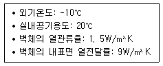
- 10℃
- 15℃
- 20℃
- 25℃
(정답률: 53%)
102. 실내공기질 관리법령에 따른 신축 공동주택의 실내 공기질 측정항목에 속하지 않는 것은?
- 오존
- 벤젠
- 라돈
- 폼알데하이드
(정답률: 62%)
103. 천창채광에 관한 설명으로 옳은 것은?
- 측창채광에 비해 채광량이 적다.
- 시공이 용이하며 비막이에 유리하다.
- 측창채광에 비해 조도분포가 불균일하다.
- 근린의 상황에 따라 채광을 방해받는 경우가 적다.
(정답률: 75%)
104. 가로 9[m], 세로 9[m], 높이가 3.3[m]인 교실이 있다. 여기에 광속이 3200[lm]인 형광등을 설치하여 평균 조도 500[lx]를 얻고자 할 때 필요한 램프의 개수는? (단, 보수율은 0.8, 조명률은 0.6이다.)
- 20개
- 27개
- 35개
- 42개
(정답률: 60%)
1⑤. 음의 대소를 나타내는 감각량을 음의 크기라고 한다. 음의 크기의 단위는?
- sone
- phon
- dB
- Hz
(정답률: 52%)
106. 벽체의 전열에 관한 설명으로 옳은 것은?
- 열전도율은 기체가 가장 크며 고체가 가장 작다.
- 공기층의 단열효과는 그 기밀성과는 관계가 없다.
- 단열재는 물에 젖어도 단열성능은 변하지 않는다.
- 일반적으로 벽체에서의 열관류현상은 열전달-열전도-열전달의 과정을 거친다.
(정답률: 70%)
107. 광원의 연색성에 관한 설명으로 옳지 않은 것은?
- 연색성을 수치로 나타낸 것을 연색평가수라고 한다.
- 고압수은램프의 평균 연색평가수(Ra)는 100이다.
- 평균 연색평가수(Ra)가 100에 가까울수록 연색성이 좋다.
- 물체가 광원에 의하여 조명될 때, 그 물체의 색의 보임을 정하는 광원의 성질을 말한다.
(정답률: 60%)
108. 다공질재 흡음재료에 관한 설명으로 옳지 않은 것은?
- 주파수가 낮을수록 흡음률이 높아진다.
- 표면마감처리방법에 의해 흡음 특성이 변한다.
- 두께를 늘리면 저주파수의 흡음률이 높아진다.
- 강성벽 앞면의 공기층 두께를 증가시키면 저주파수의 흡음률이 높아진다.
(정답률: 61%)
109. 중앙식 급탕방식에 관한 설명으로 옳지 않은 것은?
- 배관 및 기기로부터의 열손실이 많다.
- 급탕개소마다 가열기의 설치 스페이스가 필요하다.
- 시공 후 기구 증설에 따른 배관변경 공사를 하기 어렵다.
- 기구의 동시이용률을 고려하여 가열 장치의 총용량을 적게 할 수 있다.
(정답률: 59%)
110. 증기난방방식에 관한 설명으로 옳지 않은 것은?
- 한랭지에서 동결의 우려가 적다.
- 온수난방에 비하여 예열시간이 짧다.
- 부하변동에 따른 실내방열량의 제어가 용이하다.
- 열매온도가 높으므로 온수난방에 비하여 방열기의 방열면적이 작아진다.
(정답률: 51%)
111. 할로겐 램프에 관한 설명으로 옳지 않은 것은?
- 휘도가 낮다.
- 형광램프에 비해 수명이 짧다.
- 흑화가 거의 일어나지 않는다.
- 광속이나 색온도의 저하가 적다.
(정답률: 55%)
112. 공기조화방식 중 팬코일 유닛방식(FCU)에 관한 설명으로 옳지 않은 것은?
- 각 유닛마다 개별조절이 가능하다.
- 각 실에 배관으로 인한 누수의 우려가 없다.
- 덕트 방식에 비해 유닛의 위치 변경이 쉽다.
- 덕트 샤프트나 스페이스가 필요없거나 작아도 된다.
(정답률: 50%)
113. 벽의 차음력에 관한 설명으로 옳지 않은 것은?
- 투과율이 작을수록 차음력은 커진다.
- 투과손실(TL)이 작을수록 차음력은 커진다.
- 일반적으로 벽의 두께가 두꺼울수록 차음력이 우수하다.
- 흡음률이 동일할 경우 반사율이 높은 재료가 낮은 재료보다 차음력이 크다.
(정답률: 62%)
114. 급수배관의 설계 및 시공상의 주의점에 관한 설명으로 옳지 않은 것은?
- 수평배관에는 공기나 오물이 정체하지 않도록 한다.
- 수평주관은 기울기를 주지 않고, 가능한 한 수평이 되도록 배관한다.
- 주배관에는 적당한 위치에 플랜지 이음을 하여 보수점검을 용이하게 한다.
- 음료용 급수관과 다른 용도의 배관이 크로스 커넥션(cross connection)되지 않도록 한다.
(정답률: 74%)
115. 기온, 습도, 기류의 3요소의 조합에 의한 실내 온열감각을 기온의 척도로 나타낸 것은?
- 등가온도
- 작용온도
- 유효온도
- 수정유효온도
(정답률: 67%)
116. 대기압 조건에서 현열과 잠열에 관한 설명으로 옳지 않은 것은?
- 0℃ 얼음을 100℃ 물로 만들기 위해서는 현열만 필요하다.
- -10℃ 얼음을 0℃ 얼음으로 만들기 위해서는 현열만 필요하다.
- 100℃ 물을 100℃ 수증기로 만들기 위해서는 잠열만 필요하다.
- 0℃ 물을 100℃ 수증기로 만들기 위해서는 현열과 잠열이 필요하다.
(정답률: 45%)
117. 급수설비의 급수 및 양수펌프로 주로 사용되는 펌프의 종류는?
- 회전식 펌프
- 왕복식 펌프
- 원심식 펌프
- 사류식 펌프
(정답률: 53%)
118. 전기설비용 시설공간(실)에 관한 설명으로 옳지 않은 것은?
- 변전실은 부하의 중심에 설치한다.
- 발전기실은 변전실에서 멀리 떨어진 곳에 설치한다.
- 중앙감시실은 일반적으로 방재센터와 겸하도록 한다.
- 전기샤프트는 각 층에서 가능한 한 공급 대상의 중심에 위치하도록 한다.
(정답률: 77%)
119. 자연환기에 관한 설명으로 옳은 것은?
- 환기량은 실내외의 온도차가 클수록 감소한다.
- 개구부가 2개소 있을 경우, 위치에 상관없이 환기량은 동일하다.
- 환기량은 일반적으로 공기유입구와 유출구의 높이 차이가 클수록 증가한다.
- 자연환기에는 중력환기와 풍력환기가 있으며, 자연환기는 이 두 가지 방법 중 한 방법으로만 이루어진다.
(정답률: 70%)
120. 실내에 발생열량이 70W인 기기가 있을 때, 실내공기를 20℃로 유지하기 위해 필요한 환기량은? (단, 외기온도 10℃, '공기의 밀도 1.2kg/m3, 공기의 정압비열 1.01 kJ/kg·K)
- 10.8m3/h
- 20.8m3/h
- 30.8m3/h
- 40.8m3/h
(정답률: 51%)